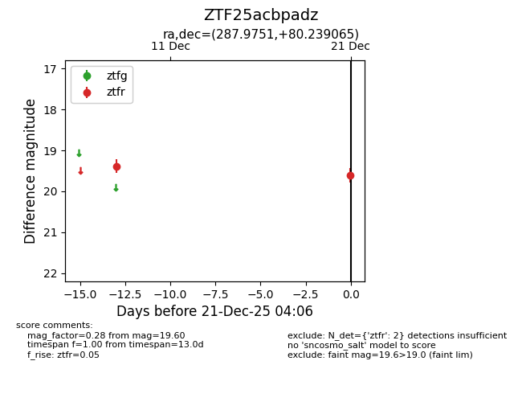
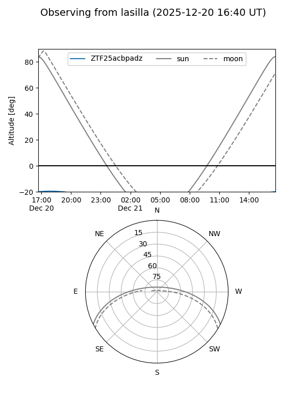
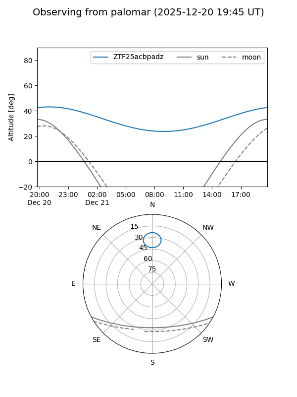

ZTF25acbpadz
Target ZTF25acbpadz at 2025-12-21 04:08
Aliases and brokers:
FINK: fink-portal.org/ZTF25acbpadz
Lasair: lasair-ztf.lsst.ac.uk/objects/ZTF25acbpadz
ALeRCE: alerce.online/object/ZTF25acbpadz
alt names
ZTF25acbpadz (ztf,fink_ztf)
Coordinates:
equatorial (ra, dec) = 287.9751,+80.23907
equatorial (HMS+DMS) = 19:11:54.03,+80:14:20.64
galactic (l, b) = (112.1175,+25.84442)
Flags:
Photometry:
last ztfr=19.60
2 ztfr detections
Lightcurve

Visibility


Additional plots